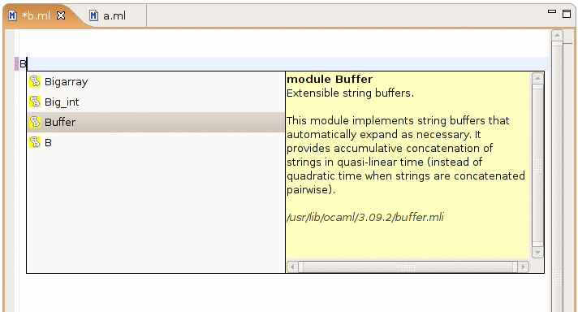
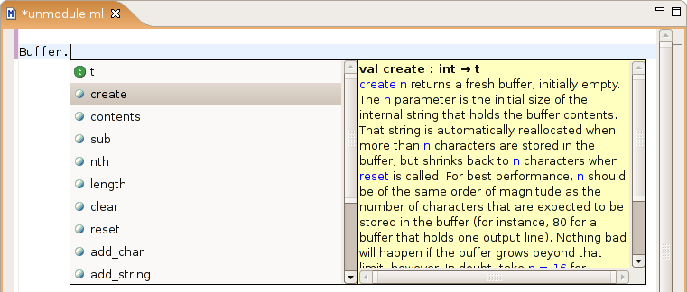
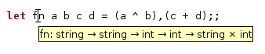
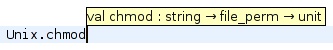
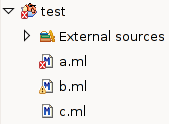
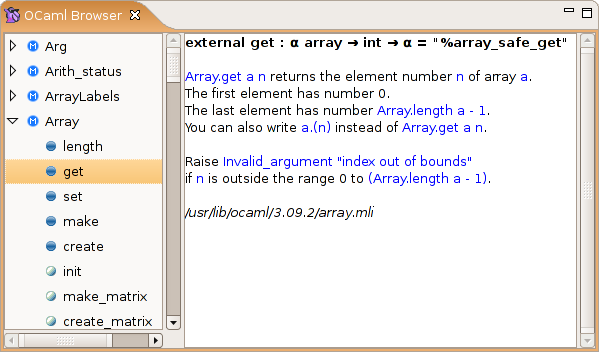
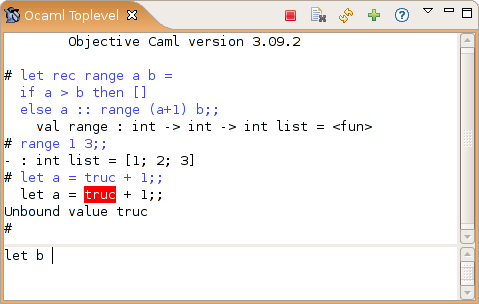

Screenshots
Module Completion

Type a "B" and Ctrl+Space, and you get all the modules that start with a "B", along with their description
extracted from their ocamldoc comments.
Members Completion

If you type "Buffer.", a completion box automatically appears when you type the ".", with all the elements
in the "Buffer" module, along with their description.
Code Outline

The code outline, which allows you to have an overview of all the definitions in your code, and to jump to a definition
by clicking on it.
Type pop-ups

When you hover the mouse over a variable in a file compiled with the "-dtypes" option, you get this popup.
Information pop-ups

Press F2 while the cursor is on a module or variable in your code to get information about that element (this
is the same information you would get while using completion).
Hyperlinks

Press Ctrl and click on any module, variable, function, constructor, etc. to jump to its definition.
Help on expected parameters

When you use completion to enter a function, exception or type constructor, this popup automatically appears to
tell you the types of expected arguments.
Project Navigator

This is the project navigator view, which you use to manage your O'Caml projects in Eclipse.
Error markers in the editor

When the O'Caml compiler reported warnings or errors, they appear in the editor as squiggly lines. You can
get an explanation of the error by hovering your mouse over it.
Error markers in the navigator

Error markers also appear in the navigator view, to give you a quick overview of which files have problems and
which ones do not.
Module Browser

This is the module browser, which allows you to browse the O'Caml library from inside Eclipse.
Toplevel

The integrated toplevel, which supports command history, interrupting the current computation, quick loading of modules
from your Eclipse projects,...